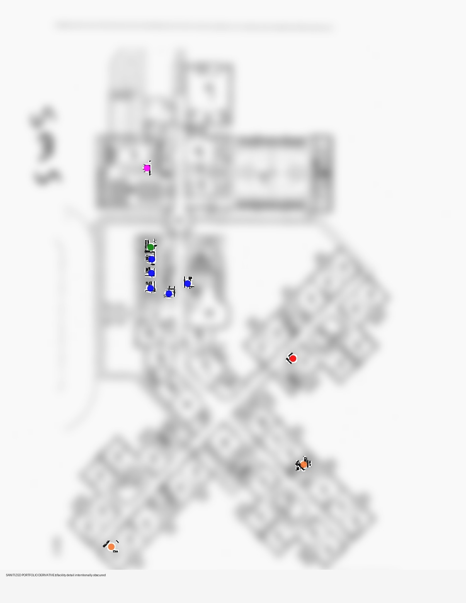

Discovery • Solution Architecture • K-12 • RFP
Mapping the problem before selling the solution.
The Moore County Schools project was not approached as a one-for-one equipment replacement. The discovery process documented how the environment actually worked—site by site, room by room, workflow by workflow—before translating those findings into a proposed districtwide solution.
Discovery
Start with the pain, not the product.
Field work captured existing devices, locations, finishing requirements, fax needs, tray requirements, workflow considerations, and recommended replacement configurations across district facilities.
Mapping
The floor plan became part of the solution design.
Detailed school maps were annotated with model-specific proposed placements. The public derivatives below intentionally destroy usable facility detail while preserving enough of the planning marks to show the methodology.
Proposal
Discovery became an actionable districtwide design.
The proposal package tied field observations to equipment selection, authentication requirements, deployment planning, commercial structure, and implementation. Contemporary proposal material identifies Joshua McDonald as the preparer.
Evidence handling
Proof should not create a new security problem.
Original school floor plans, customer information, pricing, signatures, internal identifiers and other sensitive material remain private. Only sanitized derivatives are suitable for public display.

Evidence policy: Public media on this page is derived from historical source material. Credentials, internal addressing, serial numbers, customer/staff information, precise facility details, and metadata are removed or obscured. Originals are retained separately and are not published.